01 — Cabinet mechanical hardware overview
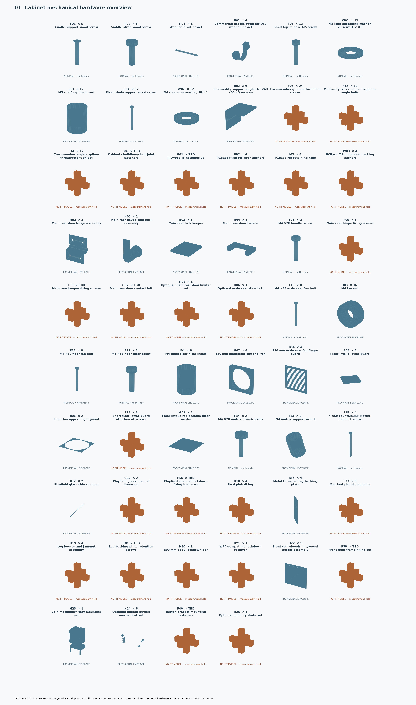
CURRENT V32 wood, holes, poses and viewer are byte-identical to the accepted HEAD. All 438 current/blank-state CAD objects are accounted for. 148 canonical families, including 91 required and 22 optional; electronics and user adapters stay separate.
The inventory is complete as an audit. 13 required rows still need quantity/coverage decisions, and 11 wood objects need a CNC decomposition/thickness plan. Null/TBD is not zero. No prices, hardware freeze or manufacturing release.
Actual CAD review atlases: one representative per family, independent image-cell scales. Native family boards are 1:1. Installed companion views use exact CURRENT coordinates. Orange crosses mark unresolved interfaces, not fabricated hardware. WPC schematics remain measurement holds.

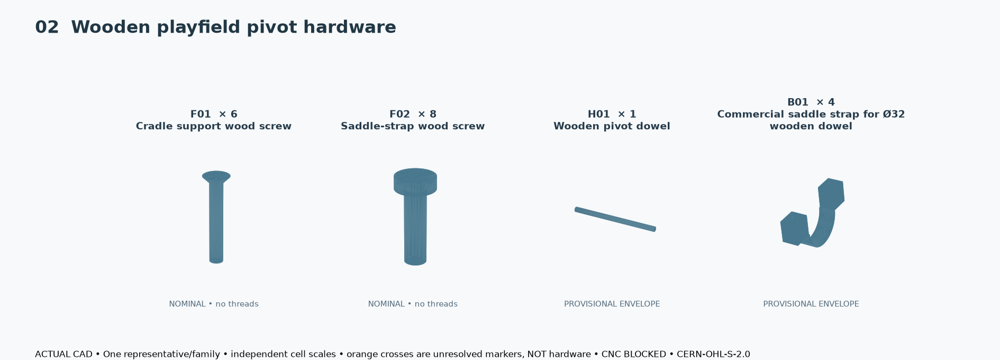
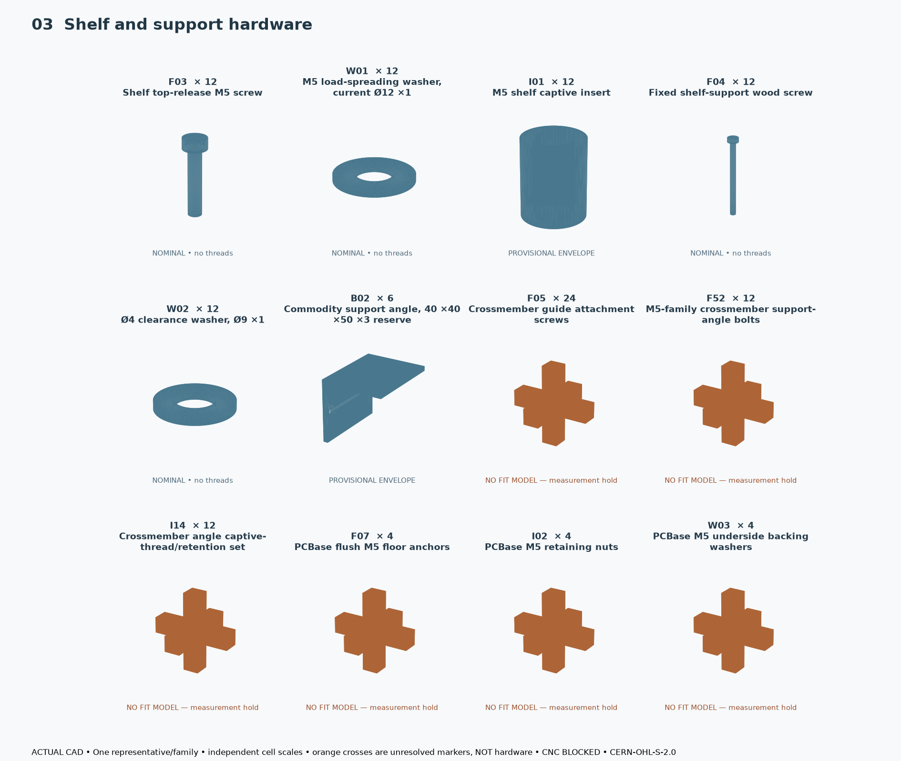
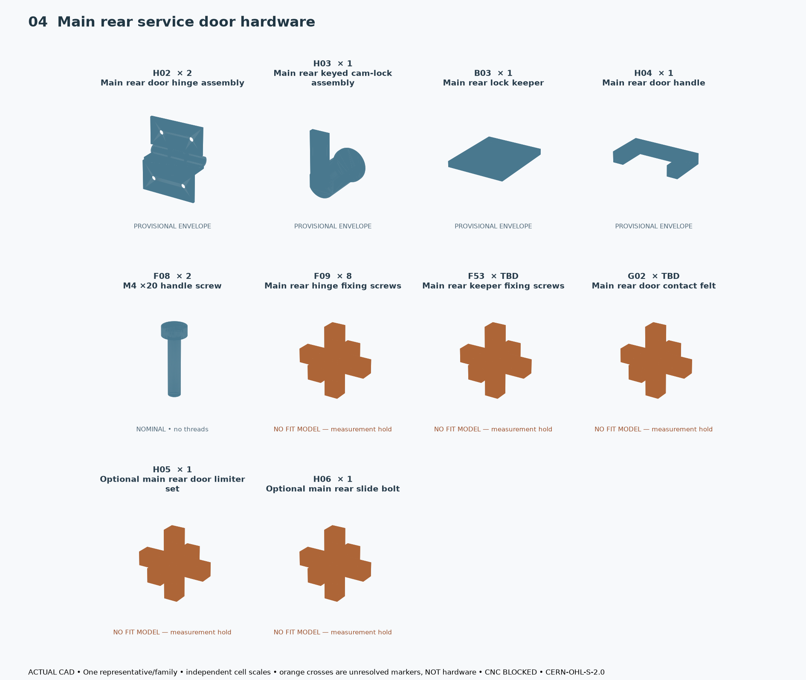
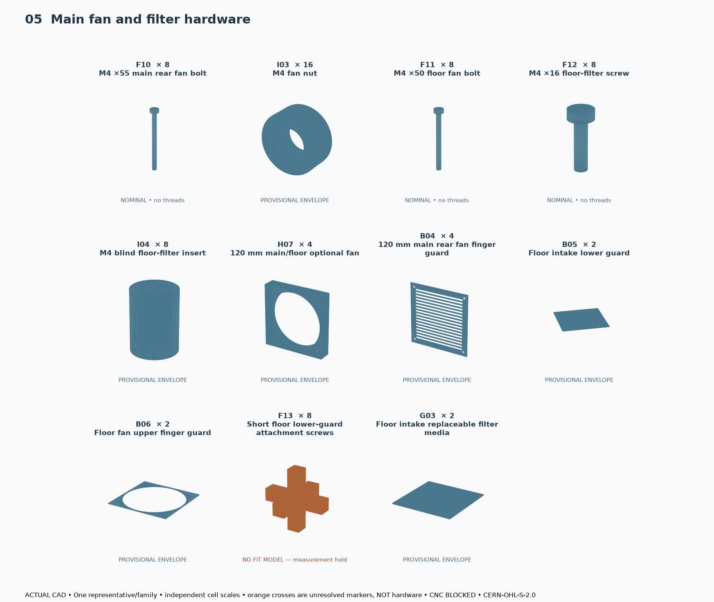
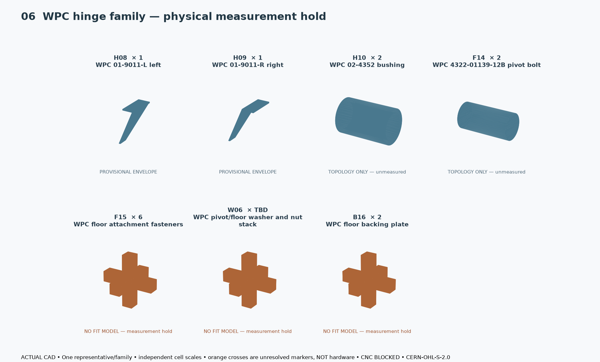
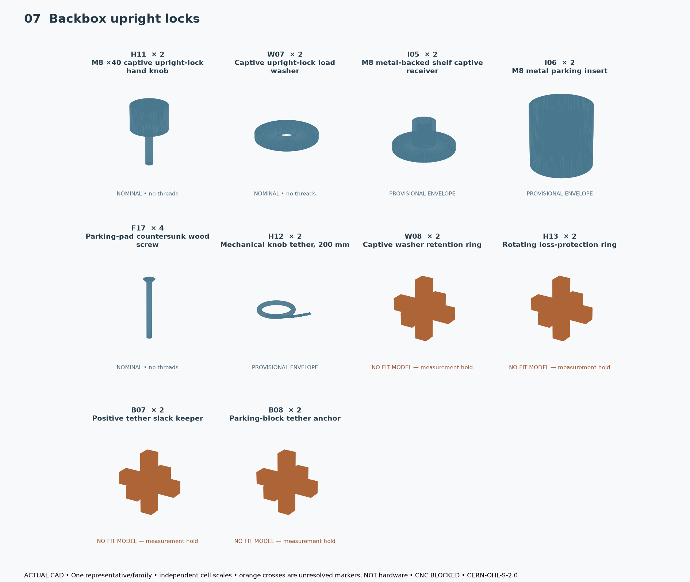
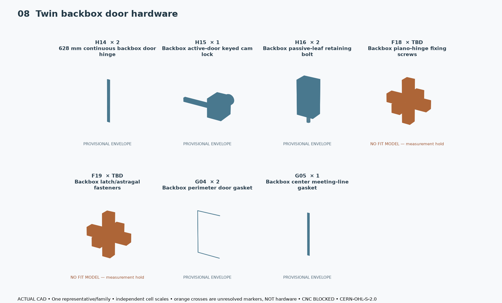
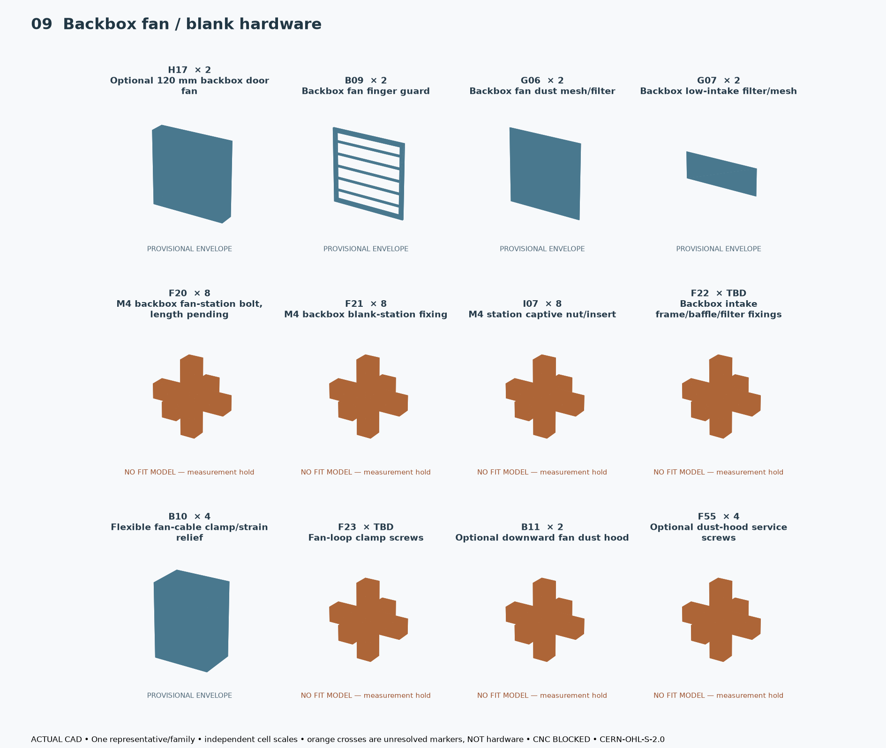
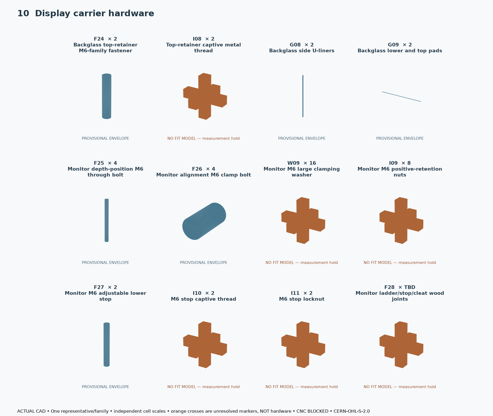
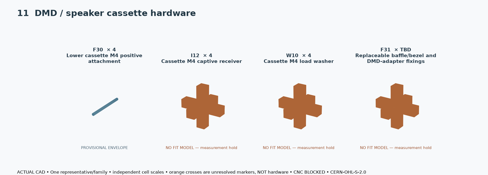
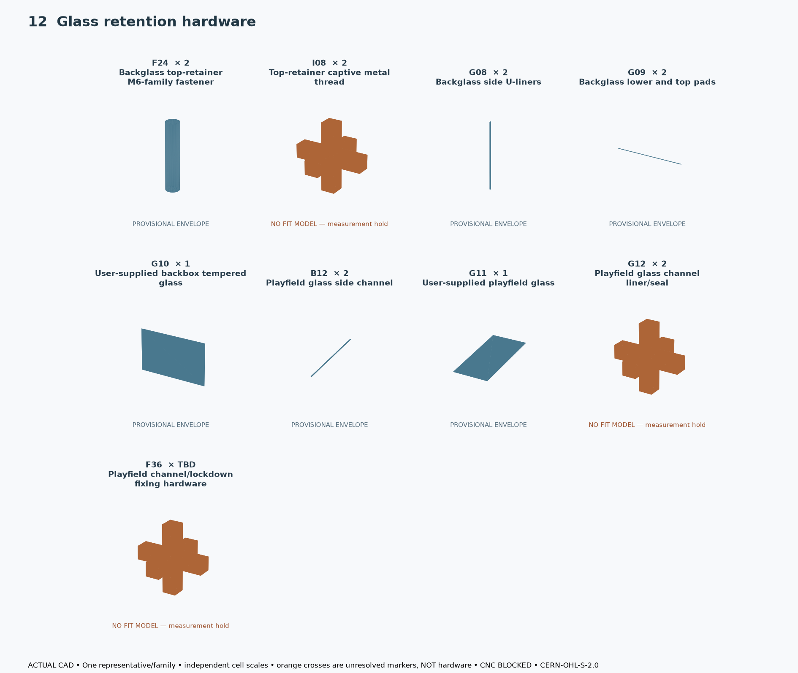
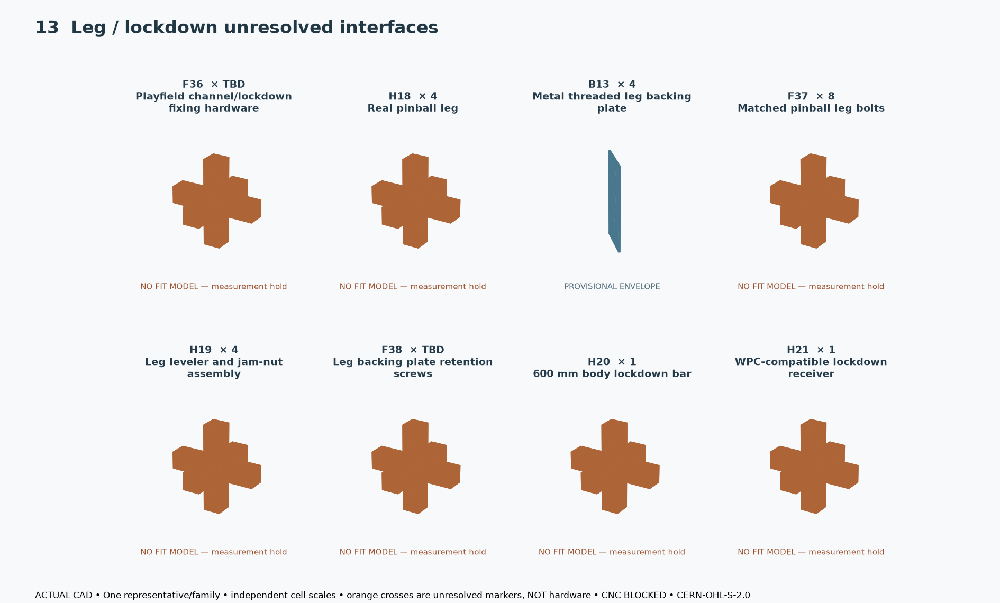
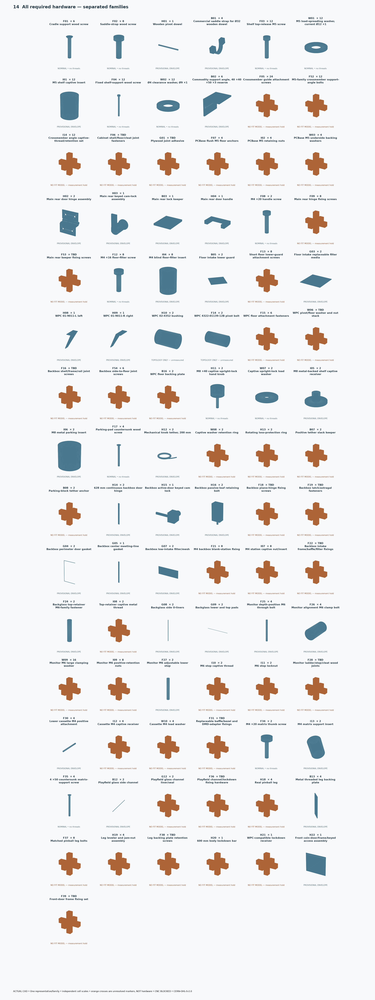
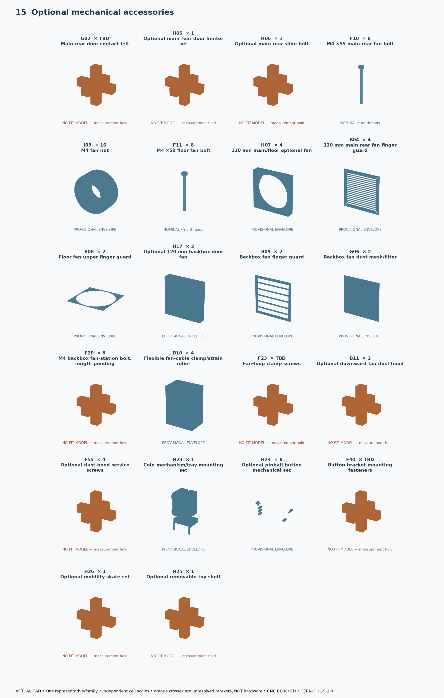